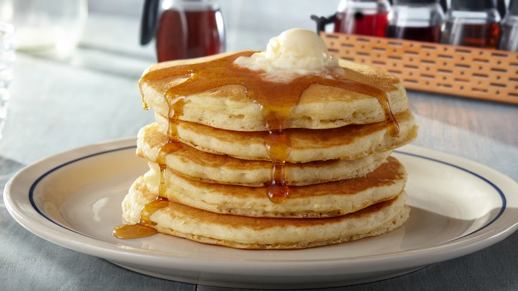

Ingredients:
200g self-raising flour
1 ½ tsp baking powder
1 tbsp golden caster sugar
3 large eggs
25g melted butter, plus extra for cooking
200ml milk
vegetable oil, for cooking
To serve:
maple syrup
toppings of your choice, such as cooked bacon, blueberries or peanut butter and jam

1. Mix the flour, baking powder, caster sugar and a pinch of salt together in a large bowl. Create a well in the centre with the back of your spoon then add the eggs, melted butter and milk. Whisk together either with a balloon whisk or electric hand beaters until smooth then pour into a jug.
2. Heat a small knob of butter and 1 tsp of oil in a large, non-stick frying pan over a medium heat. When the butter looks frothy pour in rounds of the batter, approximately 8cm wide. Make sure you don’t put the pancakes too close together as they will spread during cooking. Cook the pancakes on their first side for about 1-2 mins or until lots of tiny bubbles start to appear and pop on the surface. Flip the pancakes over and cook for a further minute on the other side. Repeat until all the batter is used up.
3. Serve your pancakes stacked up on a plate with a drizzle of maple syrup and any of your favourite toppings.
Recipe Tip
TO SERVE
If you want to serve them all at once, heat the oven to its lowest setting and put a couple of baking trays in there to keep the pancakes warm as you make the rest.